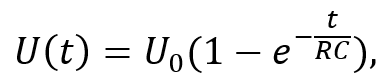
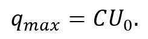
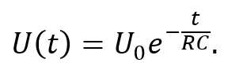

Зарядка конденсатора – це процес накопичення заряду на його обкладках під час подання деякої напруги.
Якщо під’єднати електричне коло, що складається з резистора та конденсатора, до джерела постійної напруги, у колі почне текти струм. Спочатку струм має максимальне значення, проте за долі секунди починає зменшуватися. Це пояснюється тим, що напруга на конденсаторі поступово зростає і наближається до напруги джерела – у цей час конденсатор накопичує заряд на своїх обкладках. Процес зарядки відбувається за експоненційним законом:

де U0 – подана напруга, R – опір резистора, C – ємність конденсатора.
Добуток RC називають постійною часу τ. Саме за такий період напруга на конденсаторі досягає значення приблизно 63% максимального значення. Для досягнення майже повного зарядження (≈ 99%) потрібно близько 5τ.
Заряд на обкладках конденсатора також зростає за експоненційним законом, поки не досягне свого максимального значення, яке виражається за формулою:

Розрядка конденсатора – це процес віддачі конденсатором накопиченого заряду після припинення роботи джерела напруги.
Коли джерело вимикається, напруга і струм у колі зникають, а конденсатор починає розряджатися через резистор. Напруга на його обкладках зменшується за експоненційним законом:

Струм і заряд також спадають за цим же законом, поки не досягнуть нуля.
Тривалість процесу розрядки, як і зарядка, визначається через постійну часу τ = RC. Повна (практична) розрядка також відбувається за час 5τ, коли напруга падає до менше ніж 1% від початкової.